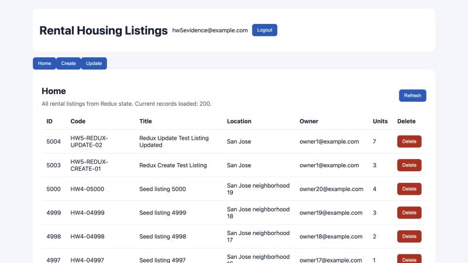

Working Home UI

Redux Toolkit Code - listingsSlice.js (fetchListings thunk and reducers)
5export const fetchListings = createAsyncThunk("listings/fetch", async (_, thunkAPI) => {
6 try { return (await api.get("/listings?skip=0&limit=200")).data; }
7 catch (error) { return thunkAPI.rejectWithValue(message(error, "Could not load listings")); }
8});
27 .addCase(fetchListings.pending, (state) => { state.loading = true; state.error = null; })
28 .addCase(fetchListings.fulfilled, (state, action) => { state.loading = false; state.items = action.payload; })
29 .addCase(fetchListings.rejected, (state, action) => { state.loading = false; state.error = action.payload; })